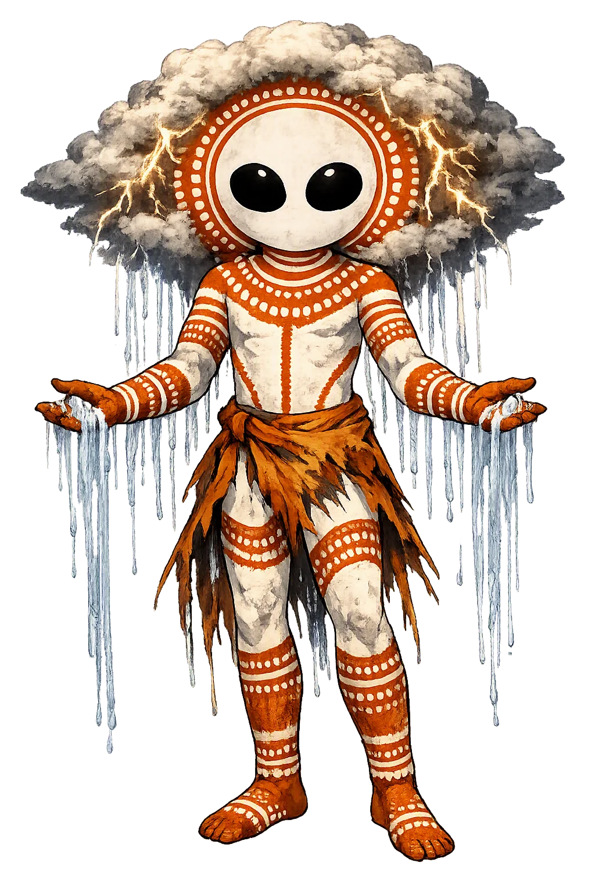
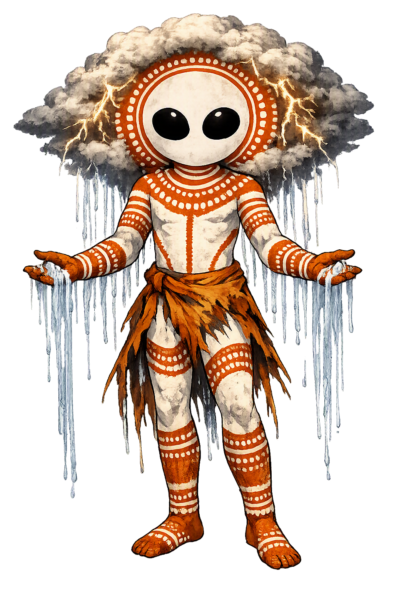

The Authentic Orthography
Cloud, Rain Spirits · Ancestral beings of monsoon skies

Unicode restoration and ASCII comparison
Wandjina
The name survives in scholarly transliteration. Wandjina is the standard Aboriginal romanisation, documented in academic sources — “The cloud spirits”. Because the spelling uses only Latin letters, the form is the same in both ASCII and Unicode.
No indigenous writing system is securely attested for individual aboriginal names. The form shown is a modern scholarly transliteration.
wandjina
The plain wandjina form is identical to the Unicode restoration. Because this name is already written in Latin letters, no diacritics, stress, or script information were lost — only capitalization differs.
Wandjina
The Unicode restoration does not need to recover lost marks for Wandjina. Its value is canonical spelling and consistent cataloguing, not the reconstruction of erased orthography. The domain is readable as-is to both DNS and humanity.
Wandjina.com → wandjina.com
The non-ASCII characters in Wandjina are encoded while the ASCII remains visible. To the DNS, it is Punycode. To humanity, it is Wandjina.
How Wandjina is preserved in writing
No indigenous writing system is securely attested for individual aboriginal names. The form shown is a modern scholarly transliteration.
Contribute scholarly provenance →Owned, ideal, and ASCII forms of Wandjina
Wandjina
The full Unicode restoration. wandjina.com is not in the PuniCodex collection — it is watched for release; if it drops, this temple upgrades to an owned flagship.
How Wandjina was spoken
Cloud, Rain, Lightning, and the Law of Country
Wandjina are the cloud-and-rain beings of the Kimberley region of Western Australia. Painted on rock shelter walls with large eyes, no mouth, and radiating halos, they are not merely art but living ancestral powers who control the monsoon, punish wrongdoers, and keep the moral and ecological order of country.
The Wandjina bring the wet-season storms that replenish waterholes, rivers, and the coastal plains; without their consent, the country dries.
Their eyes are said to be the source of lightning; their displeasure is expressed in thunder and destructive storm.
They are the owners and managers of specific tracts of land, water, and species; their authority is tied to clan estates and sacred geography.
The right to paint, name, and speak for Wandjina belongs to senior initiated custodians; the images carry protocols that protect both culture and country.
Stories of Wandjina
Wandjina cosmology is not a single narrative but a body of law carried by clan estates, initiation sequences, and painted galleries. The common thread is that the Wandjina came from the sea and the sky, shaped the country, gave law to the people, and then returned to the rock walls, where their images remain as living presences.
In the ancestral past, the Wandjina travelled across the Kimberley, creating the hills, rivers, waterholes, and species that define the country. Each clan holds the part of the journey that passes through its estate; the full map of their travels is known only through the combined authority of many custodians. When their work was complete, they lay down on the rock-shelter walls and left their images behind, yet they remain present in cloud and rain.
The Wandjina did not only make the land; they gave the Law (bugarrigarra or comparable terms) that governs kinship, marriage, food restrictions, fire management, and the treatment of sacred sites. This Law is not static scripture but a living obligation transmitted through initiation, story, and country.
As the build-up gives way to the monsoon, the Wandjina are understood to be active in the thunderheads and lightning that cross the coast. Their anger can bring destructive cyclones; their blessing brings the rain that fills the waterholes and revives the country after the long dry.
Wandjina paintings are periodically refreshed by those authorised to do so. A faded image is not abandoned; it is a spirit in need of care. The act of repainting is a renewal of the relationship between the custodians, the ancestors, and the country. Reproduction or commercial use of these designs by outsiders is widely regarded as a serious breach of cultural protocol.
The Wandjina ask us to think about power differently. They are not remote gods in a heaven separate from earth; they are in the clouds, the lightning, the rock shelters, and the Law. Their images do not 'represent' them the way a portrait represents a person; the image is a site of presence, a place where the ancestral power continues to act.
Enter Extended Lore